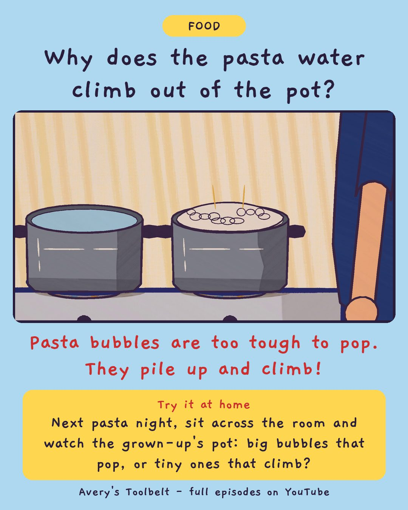

The Wrong PotWhy Does Pasta Water Boil Over?
不對的鍋子

Why does the pasta water climb out of the pot?
Pasta bubbles are too tough to pop. They pile up and climb!
Try it at home
Next pasta night, sit across the room and watch the grown-up's pot: big bubbles that pop, or tiny ones that climb?
Free printable coloring page (PDF) Watch the full episode on YouTubeAbout this episode, for grown-ups
The pasta water has climbed out of the pot three times this week, and Dad has cleaned the stove three times. Then Avery says something that stops him: plain water never does that. She knows, because she has watched it, lots of times.
Dad tells her she has already done the experiment - she just wasn't calling it one. So they do it again on purpose, with Avery on her stool and Dad at the stove: one pot of plain water, one with pasta. Gus is told there is going to be an event, and sets up a show seat with a cushion, a blanket and two drinks.
What children find out: plain water makes big bubbles that pop. Starchy water makes tiny strong ones that don't - so they pile up, and the steam under them shoves the whole thing over the side. The fix is room: a bigger pot, no lid, or turn it down.
For grown-ups: an episode with a dad who shouts once, when Avery steps toward a hot pot, then crouches down, says sorry, and tells her the truth - he shouted because he was frightened.